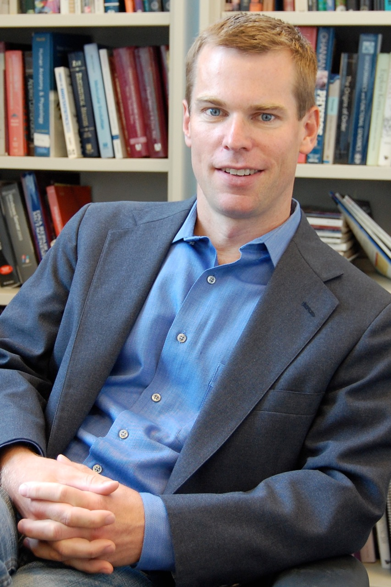

Keynote Speakers
Max Planck Institute for Chemical Ecology, Germany Homepage | Using our biological legacy before it's lost; melding computational and natural history approaches to provide economic arguments for conservationBy the end of the century, extinction will be the likely fate for most of the non-domesticated species on the planet, because organisms require habitats. Homo sapiens currently command the lion's share of net carbon fixed, ice-free land and fresh water on the planet as a consequence of our 7 billion plus members, a number that represents half of the total that ever lived. While humans have currently attained "peak baby", with the number of children produced per female has peaked and is declining (coinciding with the attainment of "peak oil"), an additional 3 billion humans will be added to the planet by the end of the century as a consequence of the demographic inertia of the existing population (1).Under such pressure from our resource-hungry species, it's hard to imagine that many of the other of the planet's inhabitants will remain at the end of the century unless they either directly feed, clothe, house or provide fuel for humans, or parasitize them and our domesticated species. Native species require native habitats, and with 10 billion human mouths to feed, the reasons for preservation must be compelling. This talk will describe two decades of research into how a native tobacco plant, Nicotiana attenuata, that lives in the Great Basin Desert of the SW USA has been developed into a model system for the study of all types of plant-ecological interactions, particularly those biotic interactions that dominate the agricultural niche. This plant recognizes attack from specific herbivore species by the particular chemistry of the herbivore's saliva, and uses this recognition to tailor a complicated 6-layered defense response that requires a remodeling of the plant's transcriptome, metabolome and proteome, as well as some of its life history traits. The science writer, Michael Pollan, inverted the relationship between humans and their domesticated plants to argue that it was plants that domesticated humans, and not vice versa. Nicotiana attenuata has had designs more Machiavellian than domestication for the heterotrophs that feed on it. As the genome of Nicotiana attenuata is being sequenced and assembled, forward genetic approaches are being planned to complement the reverse genetic approaches that have been our laboratory's main approach, and the computational approaches that we have developed to identify the genetic resources of this plant's remarkable ecological sophistication will be presented. 1) http://www.ted.com/talks/hans_rosling_religions_and_babies.html |
Division Chief and Associate Professor, Stanford University School of Medicine and Lucile Packard Children's Research Hospital Homepage | Translating a trillion points of data into therapies, diagnostics, and new insights into diseaseThere is an urgent need to translate genome-era discoveries into clinical utility, but the difficulties in making bench-to-bedside translations have been well described. The nascent field of translational bioinformatics may help. Dr. Butte's lab at Stanford builds and applies tools that convert more than a trillion points of molecular, clinical, and epidemiological data -- measured by researchers and clinicians over the past decade and now commonly called "big data"-- into diagnostics, therapeutics, and new insights into disease. Several of these methods or findings are spun out into new biotechnology companies. Dr. Butte, a bioinformatician and pediatric endocrinologist, will highlight his lab's work on using publicly-available molecular measurements to find new uses for drugs including drug repositioning, discovering new treatable inflammatory mechanisms of disease in type 2 diabetes, the evaluation of patients presenting with whole genomes sequenced, and new work on integrating and reusing the data that results from clinical trials. Dr. Butte will especially cover big data in biomedicine as a platform for innovation and entrepreneurship. |
Howard Hughes Medical Institute; Dept. of Biomedical Engineering & Center of Synthetic Biology, Boston University; Wyss Institute for Bioologically Inspired Engineering, Harvard University Homepage | Synthetic Biology and Biocomputation: Life RedesignedSynthetic biology is bringing together engineers, computational scientists and biologists to model, design and construct biological circuits out of proteins, genes and other bits of DNA, and to use these circuits to rewire and reprogram organisms. These re-engineered organisms are going to change our lives in the coming years, leading to cheaper drugs, rapid diagnostic tests, and targeted therapies to attack "superbugs". In this talk, we highlight recent efforts to model and create synthetic gene networks and programmable cells, and discuss a variety of synthetic biology applications in biocomputing, biotechnology and biomedicine. | 
Professor of Medicine, University of California, San Diego Homepage | Network-based stratification of tumor mutationsMany forms of cancer have multiple subtypes with different causes and clinical outcomes. Somatic tumor genome sequences provide a rich new source of data for uncovering these subtypes but have proven difficult to compare, as two tumors rarely share the same mutations. Here we introduce network-based stratification (NBS), a method to integrate somatic tumor genomes with gene networks. This approach allows for stratification of cancer into informative subtypes by clustering together patients with mutations in similar network regions. We demonstrate NBS in ovarian, uterine and lung cancer cohorts from The Cancer Genome Atlas. For each tissue, NBS identifies subtypes that are predictive of clinical outcomes such as patient survival, response to therapy or tumor histology. We identify network regions characteristic of each subtype and show how mutation-derived subtypes can be used to train an mRNA expression signature, which provides similar information in the absence of DNA sequence. |
Fredkin University Professor, Department Head, Machine Learning Department, Carnegie Mellon University Homepage | How the Brain Represents the Meaning of LanguageHow does the human brain use neural activity to represent meanings of words, phrases, sentences and stories? One way to study this question is to scan people's brains while they read. We have been doing such experiments with fMRI (1 mm spatial resolution) and MEG (1 msec time resolution) brain imaging, then using machine learning methods to decode mental states from observed brain activity. As a result, we have learned answers to questions such as "Are the neural encodings of word meaning the same in your brain and mine?", "What sequence of neurally encoded information flows through the brain during the half-second in which the brain comprehends a word?", and "What happens as the brain composes the meaning of multiple word phrases?" This talk will summarize some of what we have learned, and newer questions we are currently working on. We will also consider how new developments in machine learning may accelerate progress in data-intensive experimental sciences. |
David and Lyn Silfen University Professor, Depts. of Genetics and Biology, University of Pennsylvania Homepage | |||||||||||||